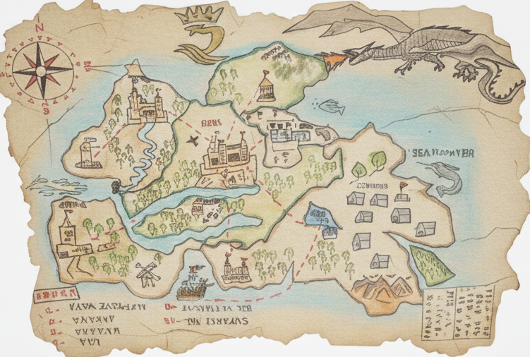

اسلامی جمہوریہ ککڑڈیا کا سرکاری نقشہ تاریخی اسلامی جغرافیائی روایت پر مبنی ہے۔ یہ الادریسی کی مشہور "تبولہ روجریана" (1154 عیسوی) سے متاثر ہے، جو اسلامی سنہری دور کا شاہکار ہے۔ اس نقشے میں جنوب اوپر اور شمال نیچے کی طرف ہے – جیسا کہ قدیم عربی نقشہ نگاروں کی روایت تھی۔
ککڑڈیا کی حدود وسطی ایشیاء، جنوبی ایشیاء اور عرب خطوں کے سنگم پر واقع ہیں، جہاں عدل اور علم کی روشنی پھیلتی ہے۔ دارالحکومت "کوکڑ پور" مرکز میں واقع ہے، جہاں شاہی محل اور عظیم جامع مسجد موجود ہیں۔ سرحدیں امن اور اتحاد کی علامت ہیں۔
🏠 واپس مرکزی صفحہ پر